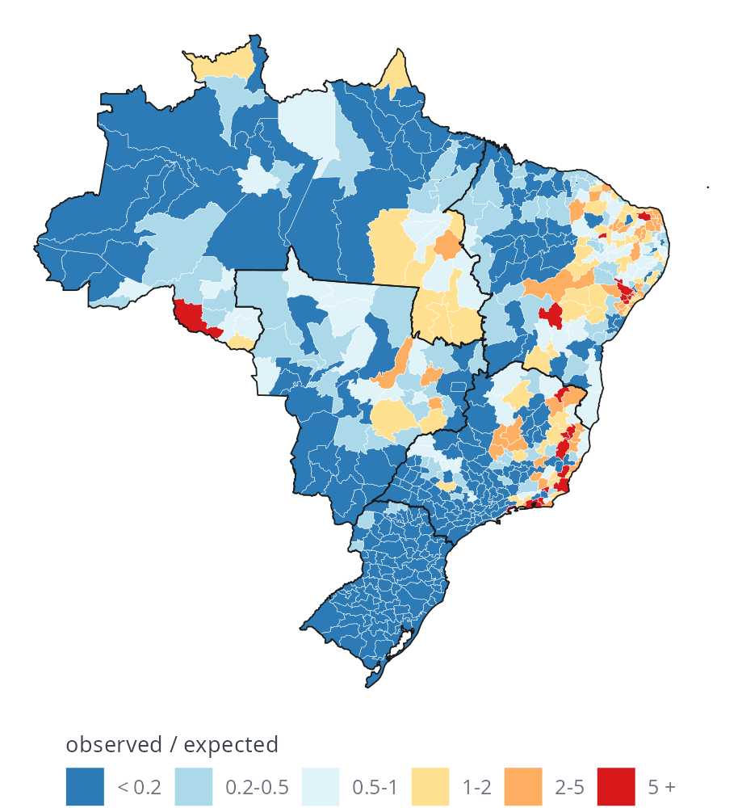
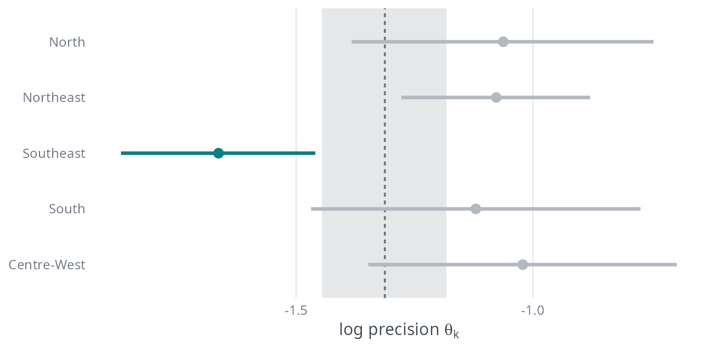
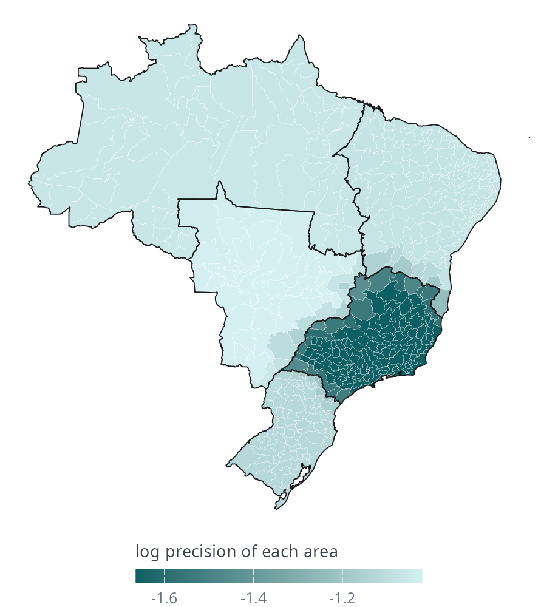
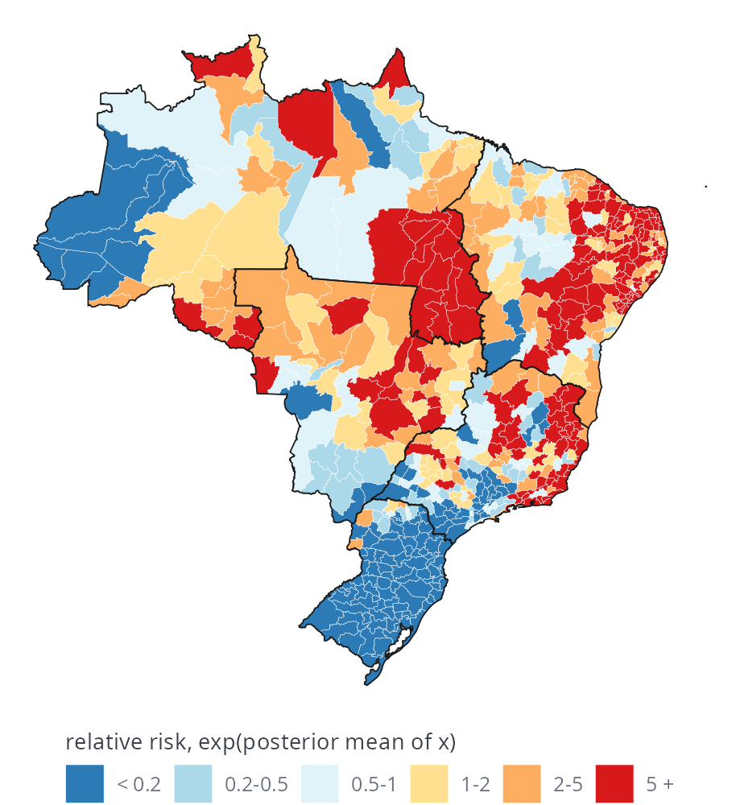
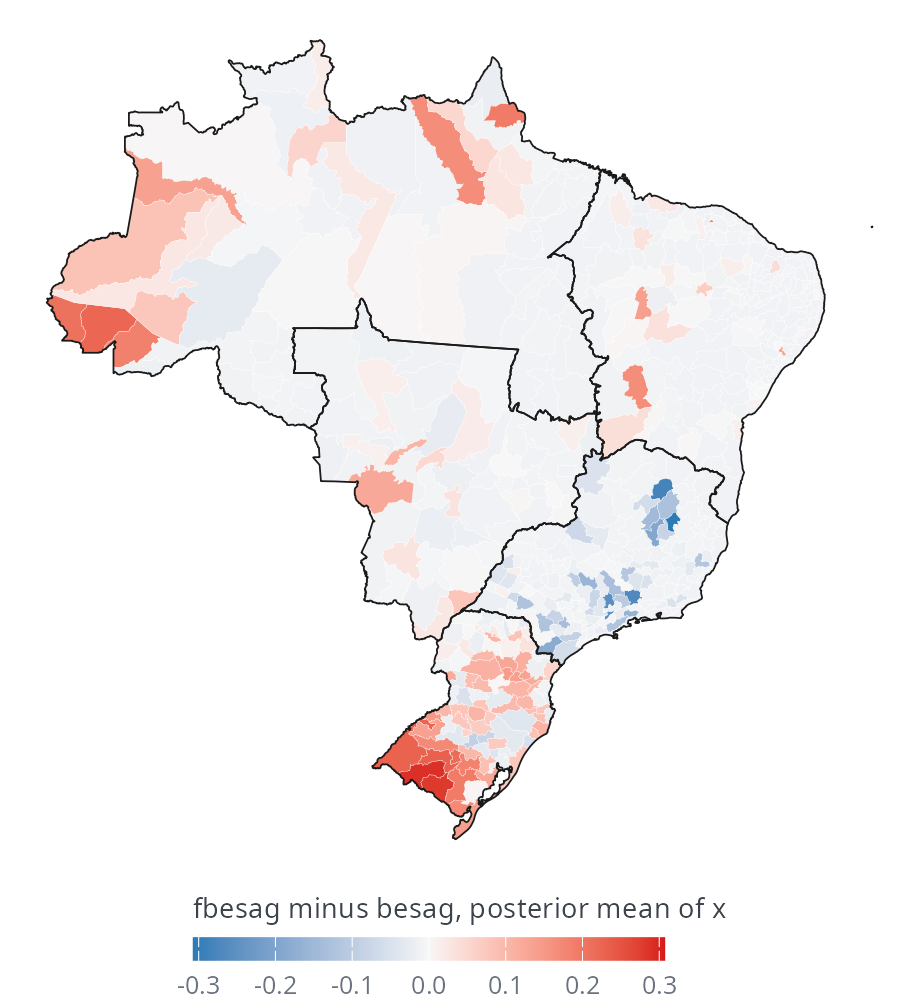

fbesag
A non-stationary spatial model: neighbours can be more alike in one part of the map than in another.
Idea
Each area is pulled towards its neighbours. How strongly is set by a precision $\tau_k$ that differs between sub-regions: high where the map is smooth, low where it is rough. With one sub-region the precision is the same everywhere (the Besag model), so comparing the two tests whether the map is non-stationary. When the sub-regions do not differ, the estimates are the same as with one precision (see the check).
Sub-regions are chosen before seeing the data. They need not be contiguous, and the graph can be a time line.
Model
where $k(i)$ is the sub-region of area $i$. The structure is scaled so that, with all $\tau_k = 1$, the geometric mean of the marginal variances is 1 (Sørbye and Rue, 2014), with a sum-to-zero constraint per connected part of two or more areas. INLA reports $\theta_k = \log\tau_k$ as Theta1, …, ThetaP.
Prior
A PC prior (Simpson et al., 2017) on the common level $\bar\theta$, and a normal prior on the deviations $\gamma_k$. As $\sigma_\gamma \to 0$, all $\tau_k$ become equal.
| argument | default | meaning |
|---|---|---|
param | list(p1 = 1, p2 = 1e-5) | $P(\text{common sd} > 1) = 10^{-5}$ |
sd_gamma | 0.2 | with five sub-regions, each $\tau_k$ within a factor of about 1.4 of the common level (two sd); with 1, about 6 |
Example: dengue in Brazil
Dengue cases in April in the 558 microregions of Brazil (Lowe et al., 2021), with the five regions as sub-regions. Data: brazil_558_microregions.RData.

library(INLA)
library(gmrfs)
load("brazil_558_microregions.RData") # data, graph, map_df
april <- subset(data, T1 == 4)
d <- list(y = april$Y, E = april$E, idx = 1:558)
region <- map_df$region_code # 1 North, 2 Northeast, 3 Southeast, 4 South, 5 Centre-West
m_besag <- fbesag(graph, id = rep(1, 558)) # one precision: besag
m_regions <- fbesag(graph, id = region) # one precision per region
fit_besag <- inla(y ~ 1 + f(idx, model = m_besag), family = "poisson", E = E, data = d)
fit_regions <- inla(y ~ 1 + f(idx, model = m_regions), family = "poisson", E = E, data = d)
round(fit_regions$summary.hyperpar[, c("mean", "0.025quant", "0.975quant")], 2)
fit_regions$mlik[2] - fit_besag$mlik[2] # log Bayes factor for the regions mean 0.025quant 0.975quant
Theta1 for idx -1.06 -1.38 -0.75
Theta2 for idx -1.08 -1.28 -0.88
Theta3 for idx -1.66 -1.87 -1.46
Theta4 for idx -1.12 -1.47 -0.77
Theta5 for idx -1.02 -1.35 -0.70
[1] 10.60896
The Southeast is rougher than the other regions.
Precision of each area
tau <- exp(fit_regions$summary.hyperpar$mean)[region] # tau of each area's region
W <- -graph; diag(W) <- 0 # the neighbours
map_df$log_tau <- log((diag(graph) * tau + drop(W %*% tau)) / (2 * diag(graph)))
library(ggplot2)
ggplot(map_df) + geom_sf(aes(fill = log_tau), colour = NA)
Maps
x_regions <- fit_regions$summary.random$idx$mean
x_besag <- fit_besag$summary.random$idx$mean
# observed over expected, relative to the whole country
map_df$smr <- (d$y / d$E) / (sum(d$y) / sum(d$E))
map_df$rr <- exp(x_regions)
map_df$diff <- x_regions - x_besag
brks <- c(0, 0.2, 0.5, 1, 2, 5, Inf)
cols <- c("#2c7bb6", "#abd9e9", "#e0f3f8", "#fee090", "#fdae61", "#d7191c")
ggplot(map_df) + geom_sf(aes(fill = cut(rr, brks, right = FALSE)), colour = NA) +
scale_fill_manual(values = cols, drop = FALSE)
ggplot(map_df) + geom_sf(aes(fill = diff), colour = NA) +
scale_fill_gradient2(low = "#2c7bb6", high = "#d7191c")
# the largest difference in each region
region_names <- c("North", "Northeast", "Southeast", "South", "Centre-West")
round(tapply(abs(map_df$diff), region_names[region], max)[region_names], 2) North Northeast Southeast South Centre-West
0.22 0.18 0.31 0.29 0.13 

Testing for non-stationarity
Compare with fbesag with one sub-region, not INLA's besag, whose default prior is different.
| $\sigma_\gamma = 0.2$ | $\sigma_\gamma = 1$ | |
|---|---|---|
| log BF, April | 10.6 | 10.4 |
fbesag has no noise term, so a rough region can also be noise. fbym2, which has one, also finds the Southeast rougher in April ($d = -0.48$, 95% interval $-0.69$ to $-0.26$; log BF 10.0).
Simulated check
20 data sets per setting on the same map, with the expected counts of April:
x <- gmrf_sample(m_regions, theta = c(-1, -1, -1.8, -1, -1))| truth | $\sigma_\gamma$ | log BF, median (range) | log BF > 0 | $\theta$ Southeast, mean | interval covers truth |
|---|---|---|---|---|---|
| stationary, all $-1.3$ | 0.2 | −0.9 (−1.7 to 0.6) | 4 of 20 | −1.29 | 19 of 20 |
| 1 | −5.8 (−7.0 to −2.8) | 0 of 20 | −1.31 | 19 of 20 | |
| Southeast $-1.8$, others $-1.0$ | 0.2 | 13.1 (3.9 to 19.3) | 20 of 20 | −1.60 | 8 of 20 |
| 1 | 13.4 (0.7 to 21.1) | 20 of 20 | −1.75 | 17 of 20 |
The default $\sigma_\gamma$ pulls the Southeast towards the others; $\sigma_\gamma = 1$ recovers it.
With no difference between the regions (stationary truth), the estimates and intervals of $x_i$ are the same as with one precision:
| model | RMSE, Southeast | RMSE, other regions | coverage, Southeast | coverage, other regions |
|---|---|---|---|---|
| one precision | 0.170 | 0.204 | 0.947 | 0.949 |
| fbesag, $\sigma_\gamma = 0.2$ | 0.170 | 0.203 | 0.948 | 0.949 |
| fbesag, $\sigma_\gamma = 1$ | 0.170 | 0.203 | 0.949 | 0.949 |
Use in MCMC
| function | returns |
|---|---|
gmrf_Q(m_regions, theta) | the precision matrix $Q(\boldsymbol\theta)$ |
gmrf_log_prior(m_regions, theta) | the log prior of $\boldsymbol\theta$ |
gmrf_log_density(m_regions, x, theta) | $\log \pi(\mathbf x \mid \boldsymbol\theta)$, with the sum-to-zero constraints |
gmrf_sample(m_regions, theta) | draws of $\mathbf x \mid \boldsymbol\theta$ on the constraints |
References
- Abdul-Fattah, E., Krainski, E., Van Niekerk, J. and Rue, H. (2024). Non-stationary Bayesian spatial model for disease mapping based on sub-regions. Statistical Methods in Medical Research, 33(6), 1093–1111. doi:10.1177/09622802241244613
- Besag, J., York, J. and Mollié, A. (1991). Bayesian image restoration, with two applications in spatial statistics. Annals of the Institute of Statistical Mathematics, 43, 1–20.
- Lowe, R., Lee, S. A., O’Reilly, K. M. et al. (2021). Combined effects of hydrometeorological hazards and urbanisation on dengue risk in Brazil: a spatiotemporal modelling study. The Lancet Planetary Health, 5, e209–e219.
- Simpson, D., Rue, H., Riebler, A., Martins, T. G. and Sørbye, S. H. (2017). Penalising model component complexity: a principled, practical approach to constructing priors. Statistical Science, 32, 1–28.
- Sørbye, S. H. and Rue, H. (2014). Scaling intrinsic Gaussian Markov random field priors in spatial modelling. Spatial Statistics, 8, 39–51.